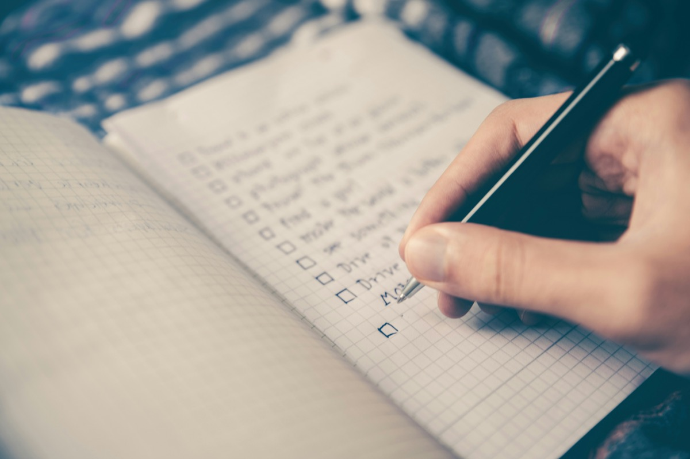

Track Anxiety With Your Cycle: 5 Apps Compared 2026
Some weeks your worry feels manageable. Other weeks the same worry feels enormous, and you can't always tell why. This guide covers what's generally understood about anxiety and the menstrual cycle, 5 apps you can use to log anxiety alongside your period, and what to track so a real pattern, if there is one, actually shows up.
Full Transparency
This guide is published by Holland Neurotech Inc., the company behind Go Go Gaia. Go Go Gaia is one of the five apps compared here. We included it because we think it's a solid option for this use case, and we've been honest about its limitations too. Every app on this list has real strengths, and the best one for you depends on how you actually like to log things.
Quick Answer: Which App Should You Use?
No app is built specifically for anxiety plus cycle tracking yet, so the real question is which tracker adapts best to it. Here are the picks by use case:
- For the fastest possible daily log: Daylio. A mood tap and a few activity icons, done in seconds
- For the deepest correlation tools: Bearable. Built by and for people managing chronic conditions, the strongest pattern-finding on this list
- For naming the feeling precisely: Moodnotes. CBT-style prompts that help you get specific about what "anxious" actually means that day
- For privacy plus cycle-first tracking: Clue. Custom mental-health tags inside a clean, science-first period tracker
- For anxiety, cycle, sleep, and habits in one place: Go Go Gaia. Cycle, mood, symptoms, sleep, and habits tracked together with correlation insights built in
How We Picked These Apps
We shortlisted the 5 apps compared below from what people actually use to log anxiety day to day, and compared them on the criteria that matter most here: how fast a daily entry is, whether you can connect a log to cycle phase, and whether the app surfaces patterns for you instead of leaving you to eyeball a calendar. Pricing was re-verified on the App Store in July 2026, and we read each app's current privacy policy rather than relying on its marketing pages.
Full disclosure: this site is published by Holland Neurotech Inc., the maker of Go Go Gaia. The list isn't ranked, each app is presented as the fit for a specific need, and we include our own app only where it genuinely belongs. We say plainly when a competitor is the better choice.

Medical Disclaimer
This article is for educational and informational purposes only and does not constitute medical advice. It is not mental health treatment guidance, and a tracking app can't diagnose an anxiety disorder, PMDD, or any other condition. Tracking apps record patterns. They don't diagnose or treat anything. Always talk with a doctor, therapist, or other qualified healthcare provider about your symptoms and any care you're considering.
If you're in crisis or having thoughts of self-harm, you don't have to wait. In the US, you can call or text the 988 Suicide and Crisis Lifeline any time, day or night. Individual experiences vary, and what one person notices may not match another.
What People Notice About Anxiety and Their Cycle
Anxiety appears to shift across the menstrual cycle for a lot of people, often running higher in the days before a period. The Office on Women's Health notes that mood-related symptoms, including anxiety and irritability, are among the most commonly reported premenstrual symptoms[1]. The Cleveland Clinic describes the late luteal phase, the week or so before a period, as a time when falling estrogen and progesterone can coincide with mood changes for many people[2].
The pattern isn't universal, and it isn't the same for everyone who notices it. Some people feel a mild dip in ease the week before their period. Others notice nothing tied to their cycle at all, and their anxiety is driven by entirely different things: workload, sleep, caffeine, life events. That range is exactly why a general article can only describe a tendency, not tell you what's true for you.
Worth naming clearly here: premenstrual anxiety that comes and goes is a different pattern from PMDD, which involves more severe and disruptive premenstrual mood symptoms. This article isn't about diagnosing either one. It's about giving you a way to see your own month-to-month rhythm, if one exists, using a plain daily log.
How We Compared These Apps
We compared each app on its App Store listing, published pricing, privacy policy, and recent user reviews, all checked in July 2026. We did not run a clinical study, and we haven't hands-on tested every feature of every app. Full disclosure: we make Go Go Gaia, one of the five apps here.
For this use case, we weighted three things most heavily: how fast a daily anxiety log is (friction is the main reason people stop tracking), whether the app connects that log to cycle phase, and whether it surfaces patterns for you automatically instead of leaving the comparison work to you.
The 5 Apps Compared
The five apps below split into three groups: fast general loggers (Daylio), a deep correlation tool (Bearable), an emotion-naming app (Moodnotes), and cycle-first trackers (Clue, Go Go Gaia). None was built for anxiety-plus-cycle tracking specifically. The right pick depends on whether speed, correlation depth, emotional precision, or cycle context matters most to you.
For the Fastest Possible Daily Log: Daylio
Best if you want: A log you'll actually keep, because each entry takes under 10 seconds.
Key Features
- Micro-logging: pick a mood, tap a few activities, done
- Custom activities, so you can add "felt anxious" or "racing thoughts"
- Streaks, reminders, and simple stats
- Mood-over-time charts and activity counts
Strengths
- The lowest-friction logging in this list, which genuinely matters. The best tracker is the one you still use in week 6
- Custom activities adapt well to anxiety-specific moments
- Generous free tier and an inexpensive premium upgrade
- Cross-platform (iOS and Android)
Limitations
- No cycle tracking at all. To see cycle patterns, you'd keep a separate period tracker and line up dates yourself
- Analysis is basic: mood averages and activity counts, not multi-factor correlations
- Lower emotion granularity than an app built for naming feelings precisely
Who Should Choose This
- You've abandoned detailed trackers before and need the absolute minimum daily ask
- You're fine cross-referencing a separate period app
- You want a general mood tracking app more than a health-specific one
Pricing
Free (core features), with an inexpensive premium upgrade (under $5/month). Available on iOS and Android.
For the Deepest Correlation Tools: Bearable
Best if you want: Thorough symptom-correlation tooling, with your cycle as one factor among many.
Key Features
- Fully custom symptoms and factors. Rate anxiety, sleep quality, or anything else on scales you define
- "Impacts" view that correlates your factors with your outcomes over time
- Optional period tracking module
- Sleep and activity data import from Apple Health and Google Fit
Strengths
- The correlation engine is genuinely the strongest in this list. If you want to know how anxiety relates to sleep, cycle day, and caffeine at the same time, Bearable was built for exactly that
- Designed with chronic-condition users in mind, and many people already use it for mental health tracking alongside other symptoms
- Generous free tier and strong app store ratings
- GDPR-compliant and states it doesn't sell data
- Cross-platform (iOS and Android)
Limitations
- Setup takes real time. There are a lot of options to configure before it feels effortless
- Cycle tracking is a module, not the core. No phase predictions or cycle-specific insights
- No nutrition tracking
Who Should Choose This
- You have other symptoms alongside anxiety (migraines, IBS, fatigue) and want one log for everything
- Correlation depth matters more to you than cycle features
- You need Android support
Pricing
Free (generous tier), Premium around $6.99/month or $34.99/year. Available on iOS and Android.
For Naming the Feeling Precisely: Moodnotes
Best if you want: Help getting specific about what "anxious" means on a given day, using a CBT-style approach.
Key Features
- Mood check-ins that prompt you to identify the specific emotion, not just "good" or "bad"
- Thinking-pattern prompts drawn from cognitive behavioral therapy concepts
- Charts showing mood trends over days, weeks, and months
- Journaling space for context around each entry
Strengths
- Genuinely useful for building a more precise emotional vocabulary over time
- The CBT framing gives structure without being clinical or heavy-handed
- Clean, well-reviewed interface
Limitations
- No menstrual cycle awareness at all
- iOS only, no Android or web version
- One-time purchase price is higher upfront than most subscription apps, though there's no recurring cost after that
- No correlation engine connecting mood to sleep, cycle, or other factors
Who Should Choose This
- You want to get better at naming what you're actually feeling, not just rating it
- CBT-style prompts appeal to you more than raw data
- You're comfortable pairing it with a separate cycle tracker
Pricing
One-time purchase, around $4.99. Available on iOS.
For Privacy Plus Cycle-First Tracking: Clue
Best if you want: A clean, science-first cycle tracker where you add custom tags for anxiety and mood.
Key Features
- Cycle tracking with phase information and predictions
- Custom tags. Create your own, like "anxious," "on edge," or "racing thoughts"
- 30+ built-in tracking categories including mood, energy, and sleep
- Science-backed content reviewed by researchers
- GDPR-compliant (Berlin-based, EU privacy standards)
Strengths
- Clue is based in Germany and operates under EU GDPR rules, with a strong, long-standing public stance on data privacy
- Custom tags fit mental-health language well, since you name the symptom and Clue tracks it against your cycle
- Clean, minimal interface that's quick to log in
- Cross-platform (iOS and Android)
Limitations
- Pattern analysis is limited. You'll mostly spot trends by scrolling back through past cycles yourself
- No connection between your tags and sleep, exercise, or other lifestyle factors
- Free users see regular prompts to upgrade to Clue Plus
Who Should Choose This
- You want a cycle tracker first and an anxiety log second
- Privacy is a top priority for you
- You're happy to review your own data for patterns
Pricing
Free (with upgrade prompts), Clue Plus around $39.99/year. Available on iOS and Android.
For Anxiety, Cycle, Sleep, and Habits in One Place: Go Go Gaia
Best if you want: Anxiety logged in the same app as your cycle, sleep, symptoms, and habits, with the app connecting the dots for you.
Key Features
- Mood and custom habit logging, so you can track "felt anxious" or "racing thoughts" with a tap
- Cycle tracking with phase context built in
- Correlation insights that connect mood logs to cycle phase, sleep, and exercise, drawn from your own data
- Passive wearable data (Apple Watch, Oura, Garmin, WHOOP) fills in sleep and recovery without manual logging
- A quarterly and yearly Health Wrapped recap covering your mood, physical, sleep, and hormonal logs

Strengths
- Cycle, mood, symptoms, sleep, and habits live in one app, so the data streams you'd otherwise compare by hand are already side by side
- Surfaces patterns like "anxiety logs cluster in the week before my period" instead of leaving you to eyeball a calendar
- Wearable integration fills in sleep automatically, even on days you forget to log much else
- No ads, no data selling
Limitations
- iOS only. No Android version yet
- Newer app with a smaller community than long-established mood or cycle apps
- Emotion naming is less granular than an app built specifically for that, like Moodnotes or How We Feel
- Full correlation insights require premium ($9.99/month or $49.99/year)
Who Should Choose This
- You want anxiety and your cycle logged in the same app, with the pattern-finding done for you
- You wear an Apple Watch, Oura, Garmin, or WHOOP and want sleep data included without extra effort
- You're on iPhone and prefer one app over juggling two or three
Pricing
Free to download, most features included. Premium is $9.99/month or $49.99/year for full correlation insights. Available on the iOS App Store.
Feature Comparison Table
Quick read of the table: Bearable and Go Go Gaia are the two apps that both take custom anxiety logs and analyze them for you. Clue is cycle-first with lighter analysis, Daylio is fastest but cycle-blind, and Moodnotes is the emotion-naming specialist. Here's the full picture (✅ full support, ⚠️ partial, 🔒 premium only, ❌ not available):
| Feature | Daylio | Bearable | Moodnotes | Clue | Go Go Gaia |
|---|---|---|---|---|---|
| Cycle & phase tracking | ❌ None | ⚠️ Optional module | ❌ None | ✅ Core focus | ✅ With phase context |
| 1-tap / fast logging | ✅ Built for it | ⚠️ Depends on setup | ⚠️ Prompts add steps | ⚠️ Quick, not 1-tap | ✅ 1-tap habits |
| Custom anxiety tags/symptoms | ✅ Custom activities | ✅ Fully custom | ⚠️ Structured prompts | ✅ Custom tags | ✅ Custom habits |
| Emotion naming granularity | ⚠️ Basic | ⚠️ Moderate | ✅ Strong focus | ⚠️ Via tags | ⚠️ Moderate |
| Correlation insights | ⚠️ Simple stats | ✅ "Impacts" view | ❌ None | ❌ Manual review | ✅ Multi-factor |
| Sleep & wearable data | ❌ None | ✅ Health app import | ❌ None | ⚠️ Basic Apple Health | ✅ Watch, Oura, Garmin, WHOOP |
| Free tier quality | ✅ Generous | ✅ Generous | 🔒 One-time purchase | ⚠️ Upgrade prompts | ✅ Generous |
| Platforms | iOS + Android | iOS + Android | iOS only | iOS + Android | iOS only |
| Best for | Fastest logging | Deep correlation | Naming feelings | Privacy + cycle-first | All-in-one + cycle |
When Another App Is the Better Choice
Go Go Gaia isn't the right pick for everyone reading this, and several of these apps win outright for specific situations. Here's where we'd honestly point you elsewhere.
Choose Bearable if deep multi-factor correlation is the whole point
If you're tracking anxiety alongside migraines, IBS, or other chronic symptoms, and your cycle is just one factor among many, Bearable's "Impacts" view is the strongest analysis tool on this list. It's also on Android, which Go Go Gaia isn't. Budget an evening for setup and it repays you.
Choose Daylio if you'll only ever log one tap a day
Be honest with yourself about your track record with trackers. If every detailed app has died in your phone within two weeks, Daylio's 10-second entries are the version of this that survives. You'll give up cycle awareness, but a 3-month Daylio streak beats a 5-day streak in anything fancier.
Choose Moodnotes if naming the feeling matters more than tracking a pattern
If your goal is understanding your anxiety in the moment rather than lining it up against your cycle, Moodnotes' CBT-style prompts do that better than any app here. Pair it with a separate period tracker if the cycle question still matters to you.
Choose Clue if privacy is your top priority
If you mostly want a clean, private period tracker and just need a few custom tags like "anxious" on top, Clue does that with minimal fuss and a strong privacy record. You'll review patterns yourself rather than getting computed insights, and for some people that's plenty.
What to Log to See Your Own Pattern
Log three things daily: an anxiety rating, sleep, and your period dates. Keep each one to a tap or a 1-to-5 rating, and keep it up for 2 to 3 full cycles. That's the whole method. Here's how to make it stick:
- Make logging stupidly easy. One tap or one rating per item. Friction is the main reason logs get abandoned, so keep the daily ask to a tap. Design for your worst day, not your best.
- Define what "anxious" means for you, once, up front. Racing thoughts? Tight chest? Trouble focusing? Keep the meaning stable so entries stay comparable later.
- Track the boring stuff too. Sleep, caffeine, and stress muddy the picture if you ignore them. A rough week after three short nights isn't necessarily a cycle pattern. Apps that pull sleep from a wearable remove this chore entirely.
- Anchor everything to cycle day. The pattern you're hunting is "the same cycle week, repeating." After 2 to 3 cycles, compare your late luteal week (the week before each period) across months and look for repeats.
- Write down the outliers. A big presentation, a family conflict, a flight. A one-line note saves you from misreading a stressful week as a hormonal one.
- Keep the record for yourself first. "My anxiety is higher the week before my period, three cycles running" is useful information to have, whether or not you ever bring it up with anyone else.
A tracking app does two of these steps for you: a 1-tap log keeps the friction near zero, and correlation insights handle the cycle-day comparison automatically. A plain paper log can work too, if you'll fill it in every day. The app's advantage is that it does the lining-up for you. If low friction is the deciding factor for you, our comparison of apps by how little logging they actually require ranks options on exactly that.
Frequently Asked Questions
The short version: many people notice anxiety shifting across their cycle, often higher in the days before a period, and 2 to 3 tracked cycles is generally what it takes to see your own pattern. The details:
Can your menstrual cycle affect anxiety?
Many people notice their anxiety shifts across the cycle, often running higher in the days before a period when estrogen and progesterone drop. The Office on Women's Health notes that mood changes, including anxiety and irritability, are among the most commonly reported premenstrual symptoms. The pattern varies a lot from person to person, which is why tracking your own cycles is more useful than a general rule.
What's the best app to track anxiety and your period together?
It depends on what you want most. Daylio is the fastest for a daily mood tap. Bearable has the deepest correlation tools for connecting anxiety to sleep, cycle, and other factors. Moodnotes helps you name the feeling more precisely. Clue is based in Germany and operates under EU GDPR rules for cycle-first tracking with mental-health tags. Go Go Gaia tracks cycle, mood, symptoms, sleep, and habits together in one app with correlation insights built in.
What should I track to see if my anxiety follows my cycle?
Keep it simple: a daily anxiety rating, your sleep, and your period dates. A one-tap log beats a long journal entry, because you're more likely to keep it up. After 2 to 3 cycles, compare the same week across months and look for repeats.
How many cycles should I track before I trust a pattern?
Plan on at least 2 to 3 full cycles. A single month can mislead you, since stress, travel, and sleep debt all move anxiety on their own. Comparing the same cycle week across 3 months makes a real pattern much easier to see through the noise.
Is this the same as PMDD?
Not necessarily. Many people notice ordinary premenstrual anxiety that comes and goes without disrupting daily life. PMDD is a distinct pattern involving more severe premenstrual mood symptoms. A tracking app can't tell the two apart. It can only show you a dated record, and our PMS vs PMDD guide walks through how the two patterns tend to differ.
Can a mood app diagnose an anxiety disorder?
Tracking apps record what you log, they don't diagnose anything. What they can do is turn weeks of scattered memory into a clear, dated pattern you can describe accurately, which is useful information to have on hand if you ever want to talk it through with someone.
Should I use one app for both anxiety and my cycle, or two separate apps?
One app is usually simpler, because the point is seeing both data streams side by side without lining up dates by hand. If you already love a fast logger like Daylio, pairing it with a separate period tracker works too, it just takes a bit more effort to compare the two.
Final Thoughts
If your anxiety has a monthly rhythm, tracking is the most reliable way to find out, and a few weeks of data will tell you more than trying to remember how the last three months felt.
Pick the app that matches how you actually log: Daylio for raw speed, Bearable for deep correlation across many symptoms, Moodnotes for naming the feeling precisely, Clue for a light, privacy-first cycle tracker, and Go Go Gaia if you want anxiety, cycle, sleep, and habits connected in one place.
Still deciding? Just pick one and log for two cycles. See what you find.
Patterns Need 2 to 3 Cycles of Data to Show Up
That's the article's whole method in one line. A 1-tap log takes under 30 seconds a day, and by the end of your second cycle you can compare the same week across months and see whether your anxiety dip or spike repeats.
A 1-tap log takes under 30 seconds a day. After two cycles you'll have the same week to compare across months.
Related Articles
References
- Office on Women's Health. "Premenstrual syndrome (PMS)." U.S. Department of Health and Human Services. womenshealth.gov
- Cleveland Clinic. "Premenstrual Syndrome (PMS)." my.clevelandclinic.org